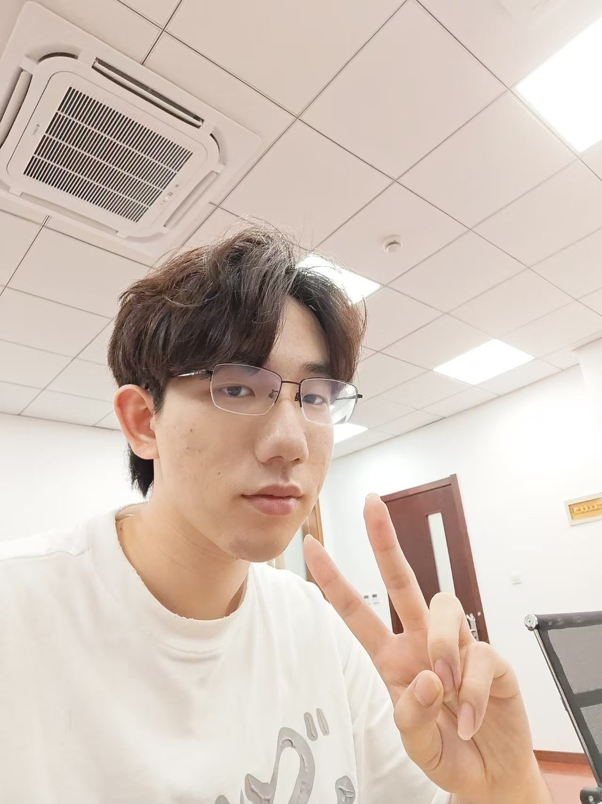

Biological foundation models
What do sequence models learn about biology, and how well does that knowledge generalize?
AI FOR LIFE SCIENCES
Curious about life. Thinking in models.
I'm an undergraduate in Health Science and Technology at Shanghai Jiao Tong University. My research interests connect biological foundation models, virtual cells, and efficient machine learning.
Previously an exchange student at Johns Hopkins University. Now preparing for the next chapter in doctoral research.

THE QUESTIONS I FOLLOW
What do sequence models learn about biology, and how well does that knowledge generalize?
How can biological knowledge and language model reasoning help explain cellular responses?
How can we preserve useful model capabilities while reducing memory and computation?
SELECTED WORK
LEARNING & GROWING
2023 — 2027
Health Science and Technology · Undergraduate
Global Institute of Future Technology. Research with Prof. Shuangjia Zheng through the PuYuan Future Scholars Program and subsequent projects.
2024 — 2025
University exchange · Krieger School of Arts and Sciences
GPA 3.94/4.0. Completed a Transformer distillation and memory optimization project under the supervision of Prof. Daniel Khashabi.
2024 — 2025
Second cohort · Completed research project
Completed OrIon, a workflow for high-throughput structured screening of metagenomic datasets, under Prof. Shuangjia Zheng.
LET'S CONNECT
I'd love to exchange ideas on biological foundation models, virtual cells, and AI for science.